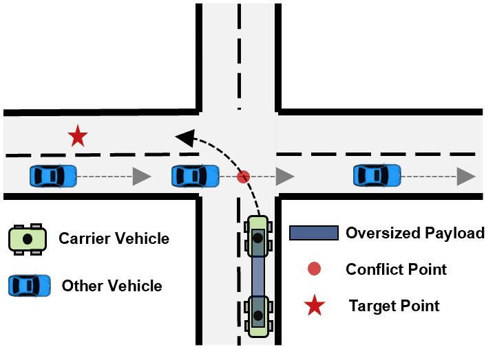
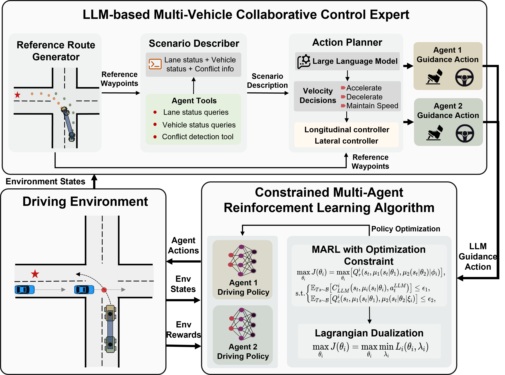

Cooperative transportation systems (CTS) for heavy-duty payloads face significant challenges in multi-vehicle coordination due to complex coupling constraints.This paper proposes a novel Large Language Model (LLM)-Driven Constrained Multi-agent Reinforcement Learning (LDC-MARL) framework for collaborative control of CTS. To realizes safe and stable multi-vehicle cooperative transportation, our approach integrates LLM guidance and fixed inter-vehicle distance constraint into the MARL policy optimization process and resolve the constrained MARL problem via Lagrangian duality theory. Extensive experiments show that LDC-MARL achieves superior performance, attaining a 100% success rate in task completion while significantly improving constraint satisfaction with up to 92.35\% reduction in violations compared to state-of-the-art baselines. The results demonstrate the proposed framework’s effectiveness in developing collision-free and motion-coordinated CTS, improving its practical applicability.

